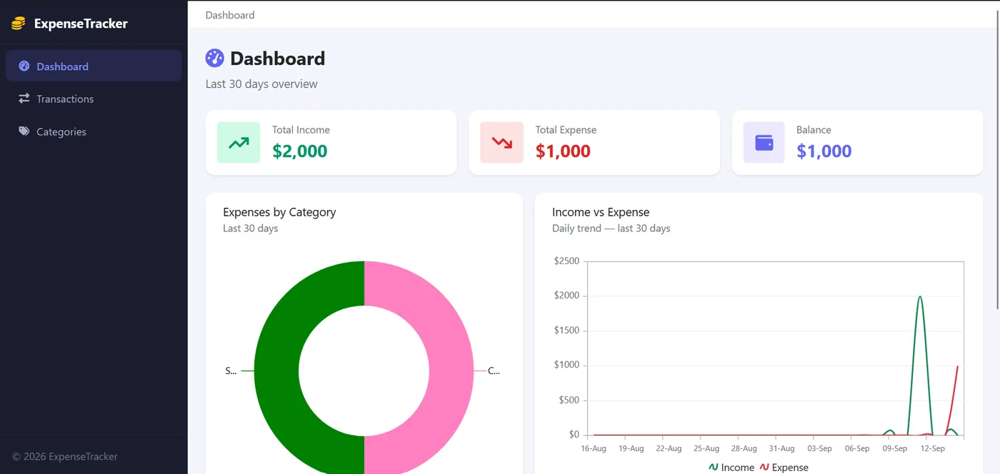

ExpenseTracker
A personal finance tracker with a live dashboard, category management, and full CRUD, built to actually use day-to-day, not just to demo.

Overview
ExpenseTracker is a code-first ASP.NET Core 8 MVC app for logging and visualizing personal spending: a dashboard with live charts, custom categories with icons and colors, and transaction management with proper server-side validation: the kind of app that needs to be trustworthy with real numbers, not just visually convincing.
The Problem
Most "finance tracker" tutorials stop at a table of rows. The goal here was closer to a real product: category-level breakdowns you can act on, protection against malformed or malicious input on every form, and a data model that could grow (recurring transactions, budgets) without a rewrite.
Architecture & Approach
Standard MVC separation, with EF Core managing the schema as code rather than hand-written SQL migrations:
- Model: EF Core code-first entities for Transactions and Categories, with a one-to-many relationship and cascade rules that keep orphaned transactions from appearing after a category is deleted.
- Controller: action methods validate via data annotations and
ModelStatebefore touching the database, and every state-changing POST is protected with anti-forgery tokens. - View: Bootstrap 5 layout with Chart.js-driven doughnut (spend by category) and spline (spend over time) charts fed by a small JSON endpoint.
Results
Every mutating action (create, edit, delete, category management) runs through the same validation and CSRF-protection path, so there's exactly one place trust decisions get made instead of one per form. The dashboard recalculates from live data on every load rather than a cached snapshot, so it's never showing stale totals.
What I'd Do Differently
- Add a proper budgets feature with threshold alerts. The data model already supports it, it just wasn't in scope for v1.
- Move chart data to a cached read-model once the transaction table grows. Right now every dashboard load recomputes aggregates directly, which is fine at this scale but wouldn't stay fine indefinitely.